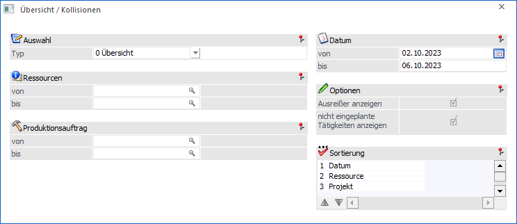
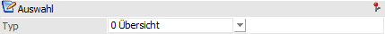
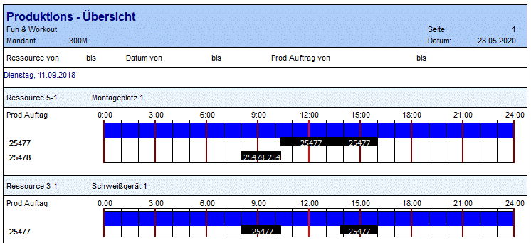
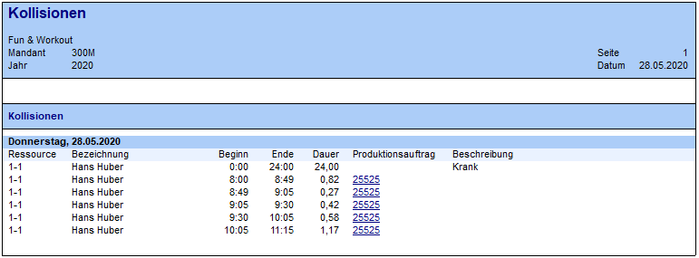
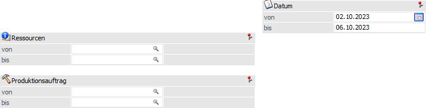
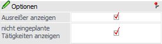
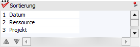
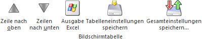
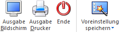

Im Menüpunkt
1 WinLine PPS
1 Auswertungen
1 Übersichts- / Kollisionsliste
kann eine Übersichtsliste und eine Kollisionsliste ausgegeben werden.

Die Ausgabe kann nach den folgenden Kriterien eingeschränkt bzw. definiert werden:
Auswahl

Ø Typ
Je nachdem, welcher Selektionsoption gewählt wird, wird eine Übersichts- bzw. eine Kollisionsliste ausgegeben.
ü 0 - Übersicht
Auf der
Übersichtliste wird ersichtlich, welche Ressourcen für welche Projekte in dem
angegebenen Zeitraum reserviert wurden.

ü 1 - Kollisionen
Anhand der
Kollisionsliste kann festgestellt werden, ob es in dem angegebenen Zeitraum zu
Kollisionen kommt. Diese können unter anderem durch die Fehlzeitenerfassung oder
erfasste Kalenderabweichungen entstehen.
Beispiel
Der Facharbeiter Hans Huber wurde am 28.05.2020 für den Produktionsauftrag 25525 reserviert. Nachträglich wurde in der Fehlzeitenerfassung eingetragen, dass Hans Huber an diesem Tag im Krankenstand ist. Dadurch entsteht an diesem Tag eine Kollision für die Ressource Hans Huber.

Selektion

Ø Ressource von / bis
An dieser Stelle kann eine Einschränkung auf die auszuwertenden Ressourcen erfolgen.
Ø Produktionsauftrag von /- bis
Hier kann eine Einschränkung auf jene Produktionsaufträge erfolgen, welche ausgewertet werden sollen.
Ø Datum von / bis
An dieser Stelle kann der zu berücksichtigende Datumsbereich angegeben werden.
Optionen

Die folgenden Optionen stehen nur bei dem Auswertungstyp " 1 - Kollisionen" zur Verfügung!
Ø Ausreißer anzeigen
Ist die Checkbox aktiviert, so werden die im Menüpunkt "Kalender" (Register "Abweichungen") erstellten Zeilen für die Auswertung berücksichtigt. Solche Kollisionen werden in der Auswertung unter der Bezeichnung "Reservierungen", die mit Abweichungen kollidieren" angeführt.
Ø nicht eingeplante Tätigkeiten anzeigen
Ist die Checkbox aktiviert, so werden nicht eingeplante Tätigkeiten mit einem Datum im "Datum von / bis"-Bereich unter der Bezeichnung "noch nicht durchgeführte Reservierungen" in der Auswertung angeführt.
Sortierung

Ø Sortierung
An dieser Stelle kann die Sortierung der Auswertung definiert werden, wobei die Sortierkriterien abhängig vom gewählten Auswertungstyps sind.
ü 0 - Übersicht
Es stehen die
Kriterien "Datum", "Ressource" und "Projekt" (Produktionsauftrag) zur
Verfügung.
ü 1 - Kollisionen
Es stehen die
Kriterien "Datum" und "Ressource" zur Verfügung.
Tabellenbuttons

Ø Zeile nach oben / Zeile nach unten
Mit Hilfe dieser Buttons kann die Sortierreihenfolge beeinflusst werden.
Ø Ausgabe Excel
Durch Anwahl des Buttons "Ausgabe Excel" wird der Inhalt der Tabelle an Microsoft Excel übergeben.
Ø Tabelleneinstellungen speichern
Die Spalten einer Tabelle können grundsätzlich an beliebige Positionen verschoben, bzw. in der Breite entsprechend angepasst werden. Durch Anwahl des Buttons "Tabelleneinstellungen speichern" werden die Einstellungen benutzerspezifisch gespeichert und bei dem nächsten Aufruf des Programmpunktes wieder vorgeschlagen.
Ø Gesamteinstellungen speichern
Im Gegensatz zu "Tabelleneinstellungen speichern" können mit "Gesamteinstellungen speichern" mehrere Tabellenaufbauten gespeichert und nach Wunsch geladen werden. Zusätzlich werden Sonderfunktionen der Tabelle (z.B. "Spalte gruppieren") ebenfalls bei der Speicherung bedacht.
Buttons

Ø Ausgabe Bildschirm
Mit Hilfe des Buttons "Ausgabe Bildschirm" oder der Taste F5 wird die Auswertung am Bildschirm ausgegeben.
Ø Ausgabe Drucker
Durch Anwahl des Buttons "Ausgabe Drucker" wird die Auswertung am Drucker ausgegeben.
Ø Ende
Durch Anwahl des Buttons "Ende" oder der Taste ESC wird das Fenster geschlossen.
Ø Voreinstellung speichern
Durch Anwahl dieses Buttons erfolgt eine benutzerspezifische Speicherung aller im Fenster getätigten Einstellungen. Diese sogenannten "Voreinstellungen" können jederzeit wieder abgerufen werden und ermöglichen dadurch ein schnelleres und zielorientierteres Arbeiten (nähere Informationen entnehmen Sie bitte dem Kapitel "Die Voreinstellungen").